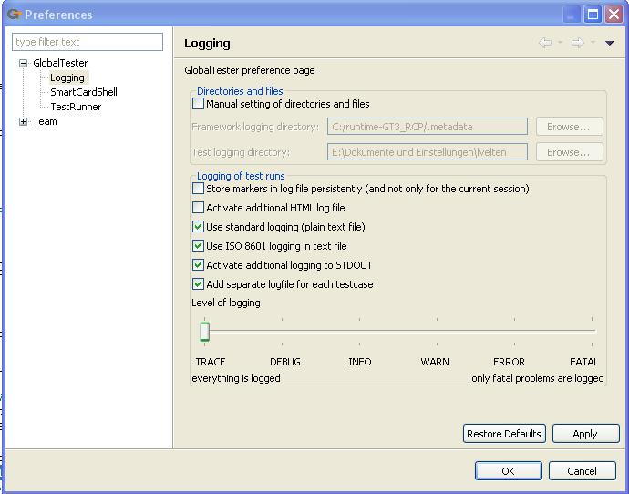

The GlobalTester > Logging preference page enables you to edit all options of what should be logged, how, and where. 
| Option | Description | Default | ||||||||||||
| Manual setting of directories and files | This option sets whether logging directories are manually selected. If it is chosen, you can specify the directories for the framework logging and for the test logging. | Off | ||||||||||||
| Store markers in log file persistently (and not only for the current session) | When this option is selected, the markers in the log file (for example the red ones for failures) will be stored persistently and hence will appear when the log file is opened in another session. | Off | ||||||||||||
| Activate additional HTML log file | This option triggers an additional log file in the HTML format. | off | ||||||||||||
| Use standard logging (plain text file) | This option ensures that the logging is stored to the default text file. | On | ||||||||||||
| Use ISO 8601 logging in text file | If this option is selected, the log file will have a time stamp for every action, and the level of logging (Info, Trace, etc.; see below) is listed. | On | ||||||||||||
| Activate additional logging to STDOUT | This option enables the logging output to STDOUT. This way you can see the logging while the TestCase is executed. | On | ||||||||||||
| Add separate logfile for each testcase | If you select this option, there will not only be one log file for the whole TestCampaign, but also one for every single TestCase executed in the TestCampaign. | On | ||||||||||||
| Level of logging | Each action is assigned to a log level.
If the slider points to one, those with a minor log level (listed from the right side of the pointer) will be logged as well. For further information, pleaser refer to the Apache log4j log levels.
|
"INFO" |